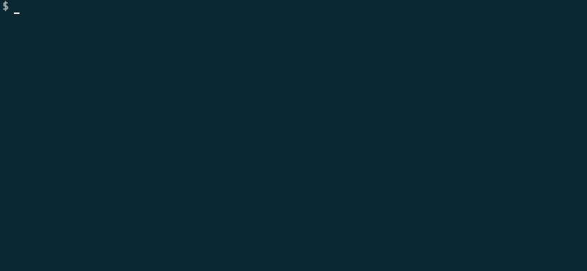
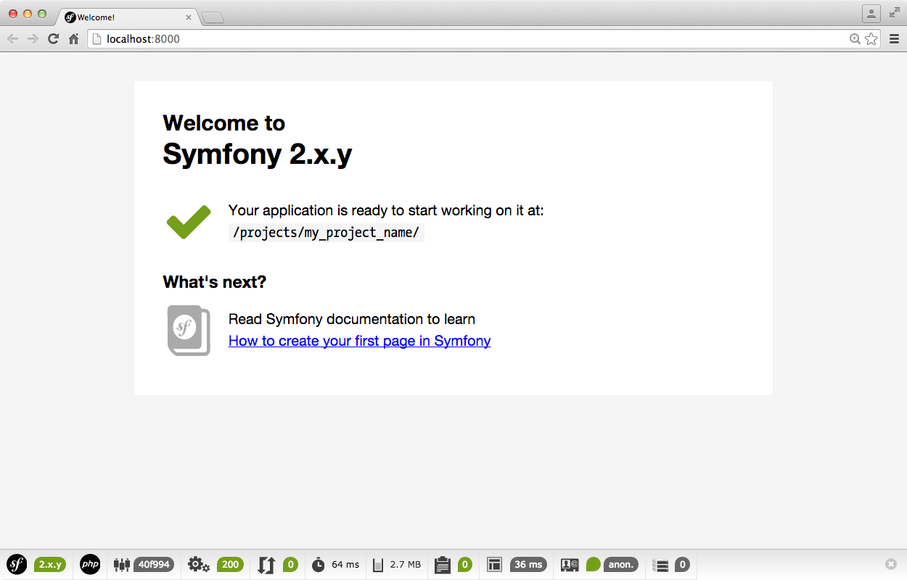

Introduction
Ces premiers TD vont nous permettre d'appréhender le Framework PHP Symfony.
Un framework est un cadre de travail de développement basé sur un certain de nombre composant
Méthodes d'installation
Plusieurs méthodes peuvent être utiliser afin d'initialiser un projet basé sur Symfony full-stack - Voir les différentes distributions
Synfony Installer- recommandéComposerZIP Package
Symfony Installer
Nous allons récupérer un executable qui va automatiser un certain nombres de tâches afin d'instancier un projet Symfony2.
Cet installer, nous allons le mettre dans notre ~/bin
$ curl -LsS http://symfony.com/installer -o ~/bin/symfony
$ chmod a+x ~/bin/symfony
Cet exécutable accepte différents arguments :
- Commande à éxécuter (
new,self-update) - Le nom du projet avec la commande
new - Version de Symfony désiré (
2.6.5,2.7.0-RC1,lts)
Du coup, afin d'instancier un projet
$ symfony new new_project
Que fait-il ?
Cet utilitaire nous permet d'automatiser plusieurs tâches.
- Vérifie les permissions
- Téléchargement du paquet
- Extrait le paquet
- Met à jour les paramètres -
app/config/parameter.yml - Met à jour les composer.json
- Créer un fichier
.gitignore - Vérifie les prérequis

Qu'obtient-on ?
app/ # Répertoire des fichiers de application globale
config # Répertoire de configuration de application globale
configdev.yml # Configuration environnement dev
configprod.yml # Configuration environnement prod
configtest.yml # Configuration environnement test
config.yml # Configuration environnement global
parameters.yml # Paramètre application
parameters.yml.dist # Template d'un fichier de paramétrage
routingdev.yml # Configuration routing dev
routing.yml # Configuration routing
security.yml # Configuration de la sécurité
services.yml # Configuration des services
Resources # Ressources application globale (static + templates)
AppCache.php # Paramétrage du cache
AppKernel.php # Kernel loading
autoload.php #
bin/ # exécutable
console # console pour les CLI
symfony_requirements
src/
AppBundle/ # Bundle métier
var/
logs # Dossier des logs
cache # Répertoire d'écriture du cache
bootstrap.php.cache
check.php
phpunit.xml.dist
SymfonyRequirements.php
vendor/ # Vendor distribution full-stack
composer
doctrine
incenteev
jdorn
kriswallsmith
monolog
psr
sensio
sensiolabs
swiftmailer
symfony
twig
autoload.php
web/ # Répertoire accessible du web
app_dev.php # Controller principal de l'application en mode dev
app.php # Controller principal de l'application en mode prod
apple-touch-icon.png
bundles
config.php
favicon.ico
robots.txt
composer.json
composer.lock
README.md
Lancer l'application
En mode développement, Symfony peut se lancer en s'appuyant sur le built-in Web Server de php grâce à la commande :
$ bin/console server:run
Vérifier le bon fonctionnement de l'installation en accédant via votre navigateur à l'URL http://127.0.0.1:8000 indiqué par le built-in Web Server de PHP

Help
Rendre le ~/bin global
Il faut modifier notre .bashrc
$ vi ~/.bashrc
Et eporter $PATH en y ajoutant notre ~/bin
export PATH=$PATH:~/bin
Ne pas oublier de recharger .bashrc
$ source ~/.bashrc